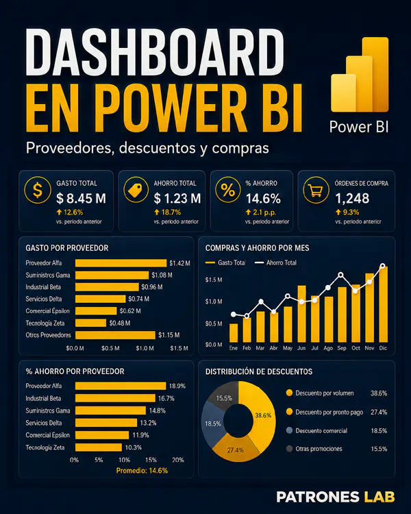

1
 Power BI
Power BI Qlik Cloud
Qlik Cloud Looker Studio
Looker Studio SQL Server
SQL Server
Descobriment
Context i objectiuComprensió del problema, la decisió que es vol millorar, els usuaris implicats i el resultat esperat.
Analítica de dades
Patrones Lab és un laboratori d'anàlisi de dades aplicat a fenòmens reals i quotidians.
S'hi desenvolupen projectes independents a partir de dades públiques, amb l'objectiu de detectar patrons, descriure comportaments i comunicar les troballes amb el seu context.
L'objectiu és formular preguntes, preparar dades, elaborar anàlisis clares i generar resultats visuals.

Soc Malcolm Di Pietro Cagliari, actuari i professional de Data & Analytics. La meva trajectòria combina Business Intelligence, informes corporatius, modelització de dades i analítica predictiva, amb experiència en sectors com la banca, les assegurances i el transport aeri.
M'especialitzo a connectar les necessitats del negoci amb solucions basades en dades: definir KPI, estructurar informació, construir quadres de comandament i desenvolupar models que ajudin a entendre millor què passa i a prendre decisions amb més context.
Comprensió del problema, la decisió que es vol millorar, els usuaris implicats i el resultat esperat.
Identificació de les fonts disponibles, el seu origen, actualització, fiabilitat i limitacions principals.
Organització, neteja i combinació de dades per construir una base coherent i utilitzable.
Desenvolupament de l'anàlisi, el model o el quadre de comandament necessaris segons l'objectiu definit.
Revisió de la coherència, l'estabilitat i l'adequació dels resultats a la realitat del negoci.
Documentació del treball final, automatització de processos recurrents i incorporació dels comentaris rebuts per a futures millores.
Selecció de projectes aplicats amb dades públiques, metodologia i resultats visuals. Fes servir els filtres per navegar per disciplina, eina o tipus de lliurament.

Anàlisi del trànsit aeri a Espanya amb dades públiques d'AENA, centrada en volums, patrons per aeroport i diferències entre categories.

Anàlisi exploratòria d'Airbnb a Londres per comparar preus, tipus d'allotjament, disponibilitat, estades mínimes i diferències entre barris.
Anàlisi de trajectes en taxi a Chicago per estudiar-ne la durada, la demanda, la distribució geoespacial i els patrons operatius.

Model de classificació amb regressió logística per identificar anuncis relativament cars o barats dins de cada tipus d'allotjament.

Quadre de comandament interactiu a Looker Studio per explorar trajectes en taxi a Chicago, indicadors operatius, patrons horaris i recorreguts entre els punts de recollida i destinació.

Model de regressió logística per estimar la probabilitat de gol de cada xut amb dades públiques de StatsBomb, validació per partits i aplicació al Mundial de Qatar 2022.
Accedir al projecte
Model probabilístic de perill esperat en el futbol amb dades públiques de StatsBomb. Estima la probabilitat de gol en les 5 jugades següents.

✅ publicat
Agrupament no supervisat amb K-means per detectar frau amb targetes de crèdit.

✅ publicat
Classificació supervisada mitjançant regressió logística per detectar frau amb targetes de crèdit.

✅ publicat
Agrupament no supervisat amb DBSCAN per identificar possibles fraus amb targetes de crèdit.
Accedir al projecte
Anàlisi d'estadístiques del Mundial 2022 amb dades públiques de StatsBomb per resumir rendiments individuals i comparar jugadors mitjançant un radar de percentils.

Anàlisi geoespacial de trajectes en taxi a Chicago per detectar les zones amb més activitat, els recorreguts urbans i la concentració territorial de la demanda.

Quadre de comandament interactiu de Power BI sobre Spotify Charts per analitzar reproduccions, rànquings, tendències temporals i distribució territorial de la música.

✅ publicat
Informe interactiu de Power BI per analitzar la despesa amb proveïdors, l'evolució mensual, la distribució per categories, l'estalvi i la distribució geogràfica.

Simulació d'un milió d'escenaris del Mundial 2026 amb valoracions Elo per estimar la probabilitat d'arribar a semifinals, disputar la final i guanyar el títol.

Model de classificació per estimar els danys econòmics de fenòmens meteorològics, comparant una regressió logística amb una xarxa neuronal.

Anàlisi geoespacial dels preus d'Airbnb a Londres mitjançant la distància al centre, els barris i les mètriques de veïnatge geogràfic.

Simulació d'un milió d'escenaris de LaLiga 2026/27 amb valoracions Elo per estimar les probabilitats dels resultats més importants del campionat.

Model de gols amb distribució de Poisson per calcular la força ofensiva i defensiva de cada equip, combinat amb la simulació de Montecarlo per estimar les probabilitats del campionat.

Simulació d'un milió d'escenaris de la Nations League 2026/27 amb valoracions Elo i un model de gols basat en Poisson per estimar les probabilitats de guanyar el grup, avançar en les eliminatòries i guanyar el títol.

Model binomial per analitzar les probabilitats de gols i resultats a partir de xuts i taxes de conversió de 36 clubs de la Champions League 2026/27.
Per a oportunitats professionals, col·laboracions analítiques o projectes de BI · ML · Quadres de comandament.
correu: malcolm@patroneslab.com
Escriu-me i et respondré tan aviat com pugui.